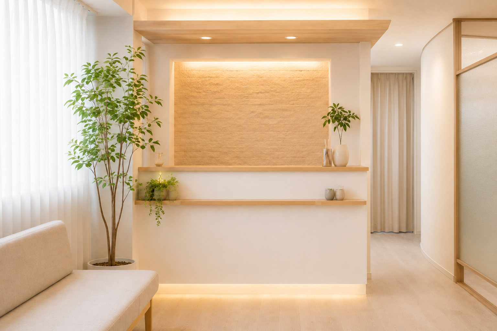
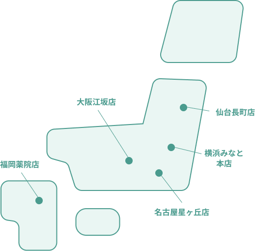

Reset + Labo
「リセラボ」は、Reset＝体を整え直す、Labo＝研究所という意味を込めた名前です。
その場しのぎではなく、一人ひとりの体のクセを見極めながら向き合います。

ABOUT
「揉んでほぐす」から、
「整えて、戻りにくい体づくり」へ。
CONCEPT
その場しのぎではなく、原因から整える考え方です。
マッサージでその場は楽になっても、数日で戻ってしまう--。それは、疲れの"結果"だけをほぐして、"原因"が残ったままだからです。リセラボ整骨院は、骨盤や姿勢の歪みという原因にアプローチし、つらさを繰り返しにくい体づくりをサポートします。
NAME
体を整え直し、一人ひとりの状態を研究するように向き合う場所です。
「リセラボ」は、Reset＝体を整え直す、Labo＝研究所という意味を込めた名前です。
その場しのぎではなく、一人ひとりの体のクセを見極めながら向き合います。
POLICY
体の状態を一緒に確認し、納得できる施術を大切にします。
Point01
つらさが出ている場所だけでなく、骨盤や姿勢の歪みも確認します。
Point02
施術前に体の状態と進め方をお伝えし、納得できる形で進めます。
Point03
毎日の姿勢や過ごし方まで含めて、無理なく続けられるケアを提案します。
CLINICS
リセラボ整骨院は、横浜みなと店を本店として全国5店舗を展開しています。
このサイトでは、横浜みなと店のメニュー・料金・ご予約方法をご案内しています。
全店で施術方針と研修体制を共有し、どの院でも安心して相談できる環境づくりを大切にしています。

Web予約は24時間受付中です。送信後、担当者からの折り返しのご連絡をもって予約確定となります。
ACCESS

住所〒000-0000
神奈川県横浜市リセラボ区リセラボ町1丁目2-3
受付時間10:00-20:00
電話番号TEL 000-0000-0000

INFORMATION
| 受付時間 | 月 | 火 | 水 | 木 | 金 | 土 | 日祝 |
|---|---|---|---|---|---|---|---|
| 10:00〜13:00 | ● | ● | ● | ● | ● | ● | — |
| 15:00〜20:00 | ● | ● | ● | ● | ● | — | — |